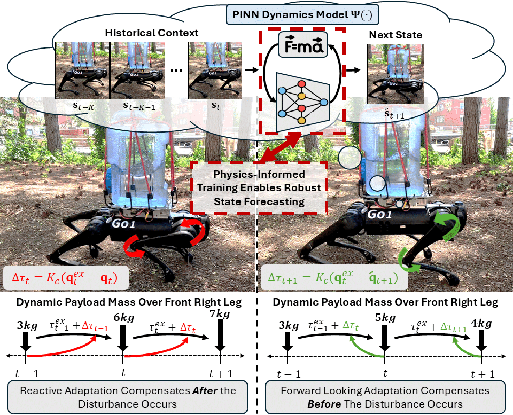

Motivation

Quadruped robots have demonstrated remarkable advances in mobility driven by their potential to operate in unstructured environments. These capabilities have enabled their use in applications such as autonomous inspection, disaster response, and search-and-rescue. In such applications, legged robots may be tasked with transporting dynamic payloads, including shifting rubble, loosely packed containers, or liquids. These dynamic payloads induce time-varying mass distributions that generate additional forces and torques acting on the robot's body. To maintain stable locomotion, the quadruped robot must rapidly adapt to these disturbances by compensating for the resulting deviations in real time.